foundit was a group project where we were tasked to identify a real-world problem and design a solution through a full UX process across three phases: Research, Prototype, and Final Product. The project focused on improving how lost items are returned and retrieved in Singapore.
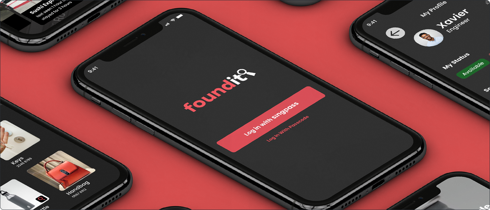
Returning lost items in Singapore is often inefficient. Even when finders have sufficient information (such as the owner's NRIC), they are frequently redirected across multiple agencies before successfully returning the item.
On average, 86 lost property cases are reported to the Found and Unclaimed Property Office (FUPO), with only about 60% successfully resolved. This highlights gaps in the current system and missed opportunities for successful returns.
The goal of this project was to better understand user pain points in the current process and design a solution that simplifies both the reporting and retrieval of lost items.
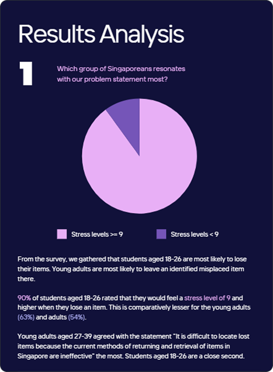
To better understand the problem space, the team conducted user research through surveys to identify key user groups and their pain points.
From these insights, personas were developed to represent typical users, along with an anti-persona to account for potential misuse of the system. User journeys were also mapped to understand how users currently navigate the process of losing or finding items, which helped prioritise key flows in the app.
To further inform design decisions, existing lost-and-found solutions were analysed. Competitor research and heuristic evaluations were conducted to identify strengths and gaps in current systems.
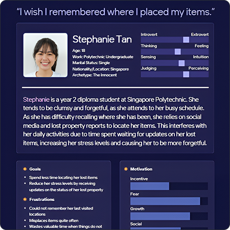
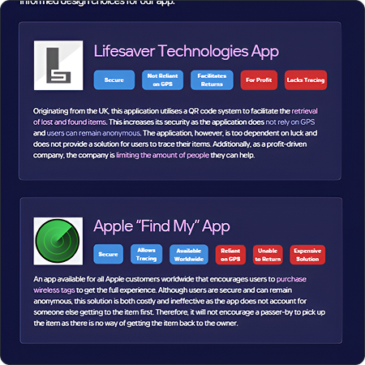
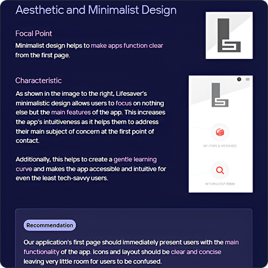
These insights led to the definition of key features:
These features were translated into wireframes to establish core user flows and screen hierarchy. After refining the flows, a style guide was developed to ensure visual consistency before moving into high-fidelity mockups.
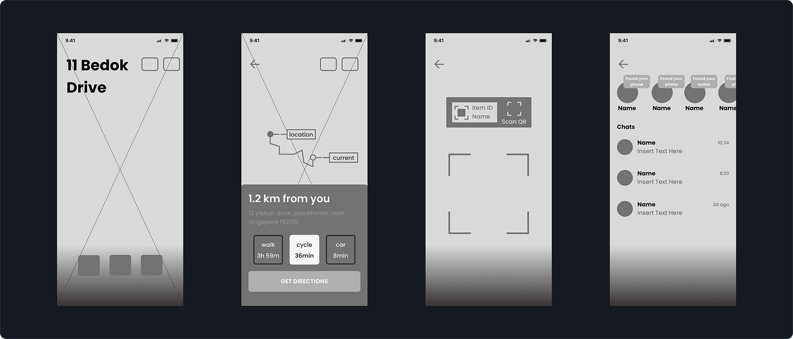
Usability testing (A/B testing) was conducted to evaluate whether users could understand and navigate the flows effectively.
Homepage Navigation
Based on usability testing, the navigation bar was made scrollable and key actions were re-positioned to improve accessibility and reduce clutter on the homepage.
Messaging System
The messaging interface was refined to display more information upfront, reducing the need for additional clicks while maintaining a clean layout.
QR Scanning Flow
The scanning experience was improved by refining animations and introducing a clear “Start Search” action after scanning, helping users better understand the next step.
Last Location Tracking
The feature was enhanced with a clearer overlay displaying key information. Icons were updated to better reflect real-world locations, improving recognition and usability.
Before creating our high-fidelity mockups, we needed to finalized on the design side of the application. This includes style guide, typography and iconography, as well as any elements that we would include in our application.
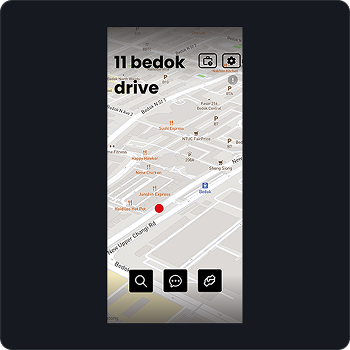
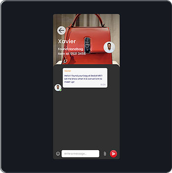
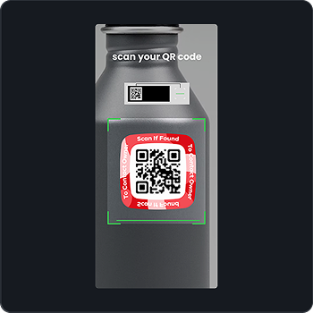
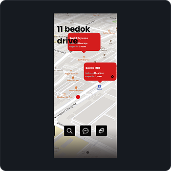
The final solution is a mobile application that streamlines the process of reporting and retrieving lost items through a clear and guided user flow. The app focuses on reducing friction at each step, from onboarding to matching lost and found items.
Key features such as SingPass login, QR-based reporting, and in-app messaging work together to create a more direct and efficient system compared to existing methods. The design prioritises clarity and ease of use, ensuring users can quickly understand what to do at each stage.
Interaction Highlights:
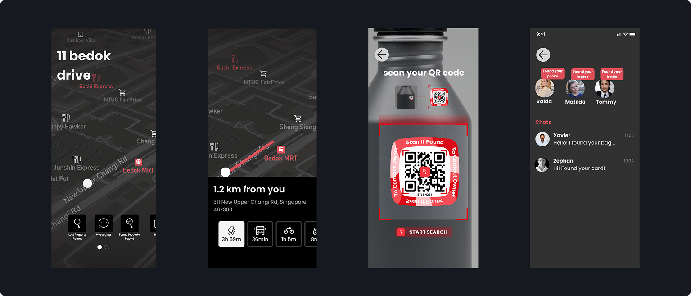
The project demonstrated how a structured UX process can be applied from research to final design to solve a real-world problem. Through user testing and iterations, the team was able to refine key flows and improve usability across the application.
Working in a team environment also strengthened collaboration and communication skills, while providing hands-on experience in designing a full product using Figma. The project highlighted the importance of aligning user needs with practical constraints, especially when translating complex ideas into usable features.